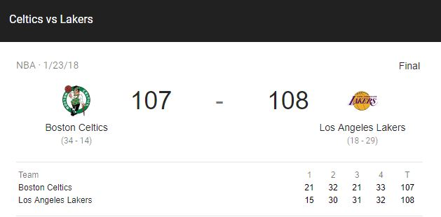
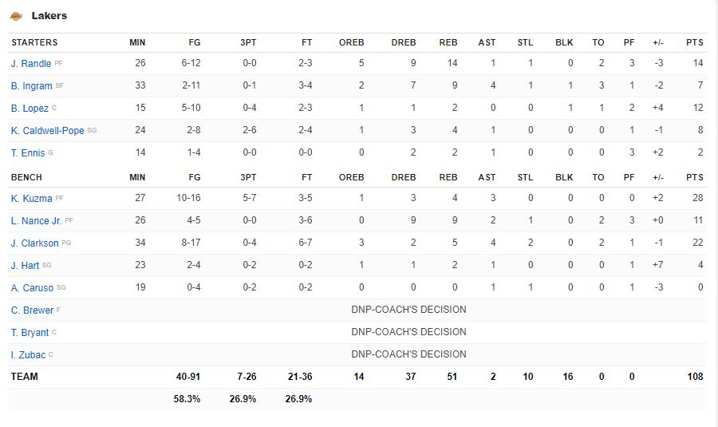
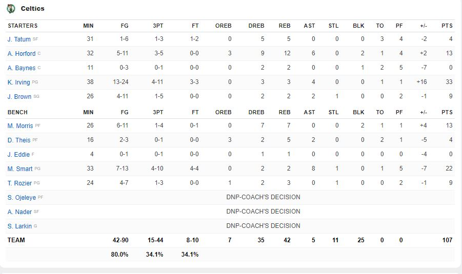

The present
The present of both franchises is unpredictable. With both teams having incredible players like Kyrie Irving, Jason Tatum, Kyle Kuzma, Brandon Ingram. The future of both of these franchise is worth waiting. The most recent game where both these teams meet was in Tuesday, January 23, 2018. This game brought a thriller just like any other matchup between these two. This game had a one-point difference in the 4th quarter, thanks to Terry Rozier making a driving layup with 7 seconds on the clock (107-108). Lucky, Marcus Smart missed a 26-foot 3-pointer, which led the Lakers to win this matchup, 107 (Celtics) to 108 (Lakers)..




Jordan Clarkson passes the ball to Kyle Kuzma; he then drives in the paint to deliver the layup.